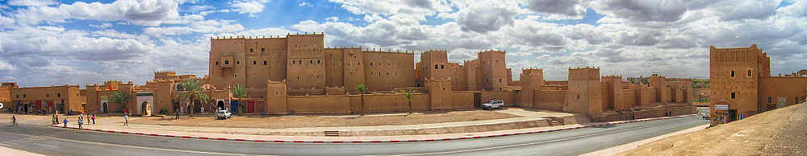
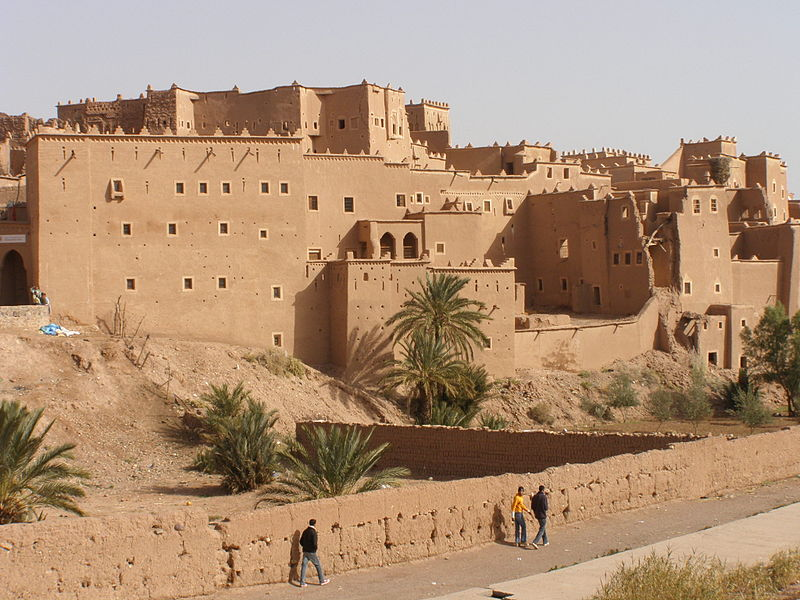
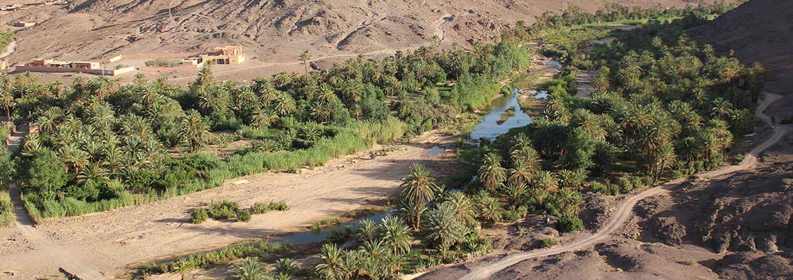
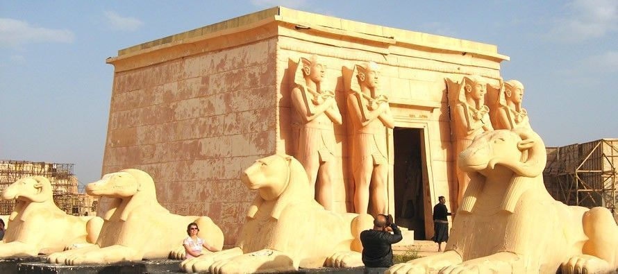

¡SaharaToursGo!
¡SaharaToursGo!
Es una ciudad del sur de Marruecos, capital de la provincia homónima, que a su vez forma parte de la región de Draa-Tafilalet. Conocida como «La puerta del desierto», es una ciudad turística próxima a los montes Atlas y al valle del río Draa
¿COMO ES OUARZAZATE?
LA TOPONIMIA
En tiempos pasados Uarzazat fue un pequeño punto en la travesía de los comerciantes africanos para alcanzar las ciudades norteñas de Marruecos y Europa
Durante el período colonial francés, Uarzazat creció de forma considerable como ciudad de abastecimiento, siendo además un centro administrativo y posta de aduanas.
En el ámbito militar, la ciudad fue utilizada entre 1928 y 1934 como base de la aviación de las tropas francesas a cargo de Henri de Bournazel (llamado «El hombre de capa roja», que murió en Marruecos en 1933) para combatir contra la tribu Ait Atta, que luchaba ferozmente contra los franceses, hasta que su jefe rebelde, Assou Oubasslam, se rindió para evitar la masacre de la población replegada en las montañas.
En el año 1942, el general francés Charles Nogues y el entonces general de división norteamericano George Patton visitaron Uarzazat.
OASIS DE FINT
A 10 km al sur de Ouarzazate, encontramos este oasis de verdor entre áridas y negras rocas de las montañas. Dispone de varios establecimientos turísticos ideales para descansar en el desierto.
ARTESANIAS Y FOLKLORE
La ciudad alberga talleres donde se fabrican y comercializan objetos de piedra, cerámica y alfombras. Las alfombras de Ouarzazate y sus alrededores (Tazernak) son muy estimadas, junto con las de la región del Djebel Siroua, también llamadas “ouzguita”, zona de Tazelnakht. Se caracterizan por su fondo naranja, con motivos azules, marrones, amarillos o negros, siguiendo composiciones muy complicadas confeccionadas en lana sedosa. Las mantas son magníficamente tejidas con pelo de cabra, a rayas negras y blancas, con adornos rojos y verdes.
El Festival Nacional de alfombras Tazenakht, con el tema «la alfombra Ouzguit«, se celebra en junio. Es típica la joyería bereber en plata incrustada o esmaltada, brazaletes, colgantes y diferentes tipos de collares. Las Dagas son típicas de la cercana población de Azlag,
La cerámica bereber es sencilla, generalmente hecha con arcilla blanca. Los motivos decorativos son parecidos a la decoración de las manos con henna, platos, jarras, cántaros menudo grandes tamaños. Artesanía en caña con lo que se fabrican cabezales de cama naturales , objetos ornamentales, sillones, estanterías, mesas, sillas, cestas,etc.
En cuanto a su Folclore, destacar el Festival Nacional Ahwac, una danza colectiva típica del Alto Atlas y las cercanas regiones saharianas. El Festival de Verano con una gran cantidad de artistas locales y nacionales, música Hip Hop, Rai, arte popular, y la música amazigh.
